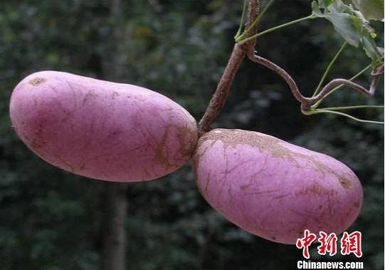
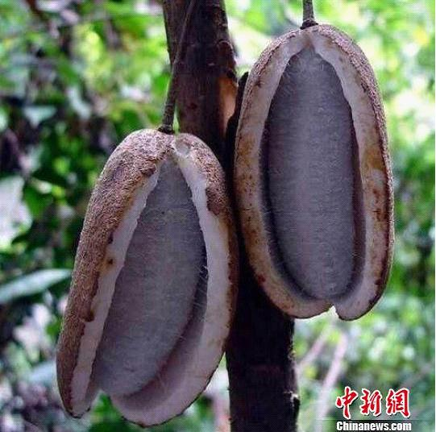

服务热线：123456
服务热线：123456

新闻中心
澳大利亚专家在四川石棉发现大面积野生八月瓜
发布人：中国新闻网 发布时间： 2015-04-10 浏览数：357

八月瓜资料图 石宣 供图

八月瓜资料图 石宣 供图
罗伯特在保护区开展工作 石宣 供图
中新网石棉4月8日电 (刘刚通讯员黄刚)记者8日从四川雅安市石棉县获悉，澳大利亚国家科学院院士、悉尼大学教授罗伯特在对石棉县栗子坪国家级自然保护区野生植物资源进行调查时，发现了大面积的野生森林名果――八月瓜。据悉，该野生八月瓜几乎分布整个保护区。
八月瓜又名八月炸，是三叶木通的果实，也是一种非常珍贵的野生果品。三叶木通为我国传统中药材，其茎藤、果实及种子均可入药，能防治痢疾、疝气等多种疾病。
八月瓜也具有良好保健功能，其果形似香蕉，富含糖、多种维生素和丰富的游离氨基酸特别是人体不能合成必须氨基酸如缬基酸、蛋氨酸、异亮氨酸、苯丙氨酸、赖氨酸等；果味香甜，为无污染的绿色食品，有“土香蕉”之称，具有良好销售前景。
四川省学术技术带头人、四川农业大学教授、石棉县副县长罗培高介绍，石棉县处于攀西战略资源创新开发试验区，是世界枇杷栽培种原产地，也是中国黄果柑第一县，具有非常丰富的植物资源可供开发利用。
罗伯特先生在实地考察了当地的光热资源和野生八月瓜的生态型及其生长环境后认为，石棉县乃至整个攀西地区土壤及生态条件均适合发展新型野生森林水果八月瓜产业，八月瓜可能成为该区域农民增收的新型特色农业产品。(完)